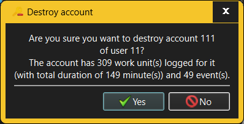

The Destroy Account dialog requests confirmation when an attempt is made to destroy an existing Account.

When destroying an Account, any Work items and comments logged for that Account will also be destroyed. The Destroy Account dialog will therefore show just how much an impact the Account's destruction will have on the recorded work history.
Only someone with Administrator or Manage Users capabilities is allowed to destroy Accounts. Specifically, a user cannot destroy their own Account otherwise.
Since destroying Accounts (and affecting the recorded work history) is a very dangerous operation, it is strongly recommended that Accounts who e.g. leave the company are "disable" rather than destroyed.
See also: -